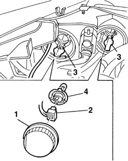
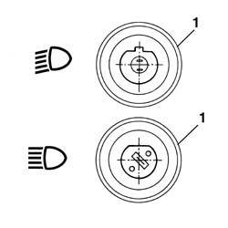

5540B22 l/h or r/h headlamp/light cluster bulb (one) - r+r
- Path
- Procedures > 55 ELECTRICAL EQUIPMENT > 5540 EXTERIOR LIGHTING > 5540B headlamps > 5540B22 l/h or r/h headlamp/light cluster bulb (one) - r+r
- Kind
- repair procedure (removal / refitting; the operation number is the code)
- Applies to
- all engines; all production periods
- Interactive page
- https://sloeber94.github.io/elrnDB-a156/en/#/3238446
Applies to: engines: 1.9 JTD 16v; all production periods
 Removing
Removing
 Refitting
RefittingApplies to: engines: 1.9 JTD 16v; all production periods
1. Open the bonnet lid then rotate the headlamp cover in an anti-clockwise direction and remove it.
2. Disconnect the electrical connection from the lamp.
3. Remove the retaining spring.
4. Extract the headlamp bulb.

Applies to: all engines; all production periods
Refitting
RemovingCheck the condition and the cleanliness of the lamp.
1. Fit the lamp, positioning it as illustrated in the diagram.

Applies to: all engines; all production periods
Fasten the retaining spring.
Connect the electrical connection to the lamp.
Check that the bulb is working.
Refit the lamp cover and rotate it in a clockwise direction.
Applies to: engines: 1.9 JTD 16v; all production periods